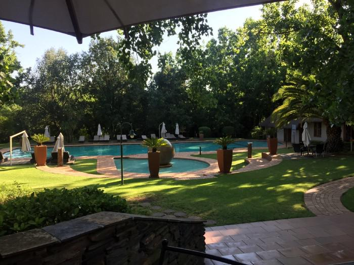
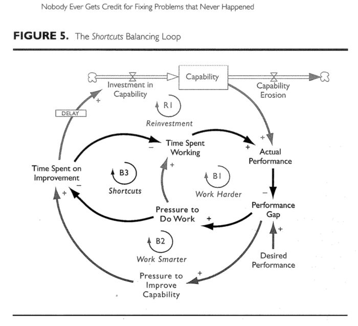
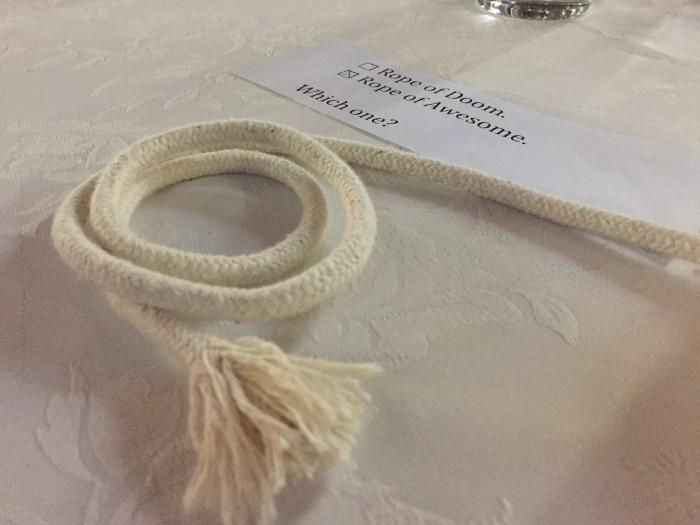

Reflecting on Let’s Test 2017
Good ideas come back around. As I sit here re-reading my notes from Let’s Test 2017, I remember the thrill of coming across so many new ideas there, and realize how much these three things stick out to me even now.
Valley Lodge & Spa, Magaliesburg, South Africa
- Causal loop diagrams
It’s possible I’d seen a causal loop disgram before, but it wasn’t until I went to Jo Perold and Barry Tandy’s “Visualize your way to better problem solving” workshop that I knew the name for them. Here’s an example of how connecting nouns with verbs via bubbles and letters really clears things up.
During the workshop, Jo and Barry talked about how drawing a diagram of your software in this way can help you discover interaction points between systems. Sharing the diagram is one way to take the invisible software you’re building into a visible space. That allows us to have a conversation about the model, discover if we’re on the same page, and take steps to improve the model and ultimately the software. The more visualizations I see of process and influence on the job, the more I realize they’re exposing Conway’s Law.
Elisabeth Hendrickson wrote in Explore It! about how causal loop diagrams can help you discover interesting areas to test. She pointed out that transitions from one state to another take time, and there’s lots to be discovered during the moments of transition about interruptions, errors, and incomplete states.
Repenning, Nelson & Sterman, John. (2003). "Nobody Ever Gets Credit for Fixing Problems That Never Happened: Creating and Sustaining Process Improvement." Engineering Management Review, IEEE. 30. 64- 64. 10.1109/EMR.2002.1167285.
Nelson Repenning and John Sterman used a causal loop diagram to display a human problem: not prioritizing time for improving. Read their whole article to discover terrifying news about how much time you’re wasting all the time by not stopping to improve!
2. Metaphors
Leo Hepis and Danie Roux’s “Frames at Work” workshop blew my mind. I would tell you they were talking about how metaphors and context framing shape the way we think about our work. And they did that. But the meandering and level of lost I felt on our path there was unprecedented.
Our table selected “Rope of Awesome” and I stand by that answer.
One of the exercises had us listening to a story about someone’s work and only writing down the metaphors. There seemed to be one every sentence, so many that I thought the speaker was throwing them in there on purpose. (See: throwing. They’re everywhere!) He talked about “pulling” and “dragging” his team along. Imagine instead if he were “pushing” or “building” his team. How would he think differently about his work? How different would his work be? Listen more closely to the words people are using to discover terrifying news about how they perceive their work!
3. Reflection and Learning
Alison Gitelson hosted a session to help the conference attendees think more about what they’d just learned. I was still reeling from the metaphors and framing session, so I wrote down these questions for myself:
- How do I realize when I’m stuck inside my own head?
- Does noticing where a behavior would be useful make it less irritating?
- Was there a better discussion because active disagreement was encouraged?
- Who in my life can help me reframe?
- Why do I feel my effort has to achieve something?
Reflect on these questions yourself for terrifying news about how stuck you can be sometimes!
Very slight double rainbow to the right.
Originally published on Medium.